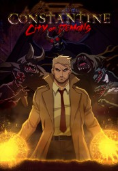

#9708 Constantine: City of Demons
 
 IMDB-Wertung: 7.8 / 10
IMDB-Wertung: 7.8 / 10  Metascore: 0
Metascore: 0 
Armed with an arcane knowledge of the dark arts and a wicked wit, John Constantine fights the good fight. With his soul already damned to hell, he’ll do whatever it takes to protect the innocent. With the balance of good and evil on the line, Constantine uses his skills to face the supernatural terrors that threaten our world and send them back where they belong. After that, who knows… maybe there’s hope for him and his soul after all.
Jahr: 2018
Dauer: 90 Minuten
FSK:
Land: USA Studio: CW SeedTonspuren: DD5.1 - ,
Untertitel: Deutsch, Englisch,
Auflösung: 1080p (1920x1080) Größe: 6205 MB
Genre: Horror, Fantasy, Animation/Trick
Regisseur: Doug Murphy
Drehbuch: J.M. DeMatteis, Steve Bissette, Alan Moore, John Ridgway, John Totleben
Soundtrack:
Darsteller:
- Matt Ryan als John Constantine, 10 episodes, 2018
 Damian O'Hare als Chas Chandler, 4 episodes, 2018
Damian O'Hare als Chas Chandler, 4 episodes, 2018 Laura Bailey als Asa the Healer, 3 episodes, 2018
Laura Bailey als Asa the Healer, 3 episodes, 2018- Emily O'Brien als Renee Chandler, 3 episodes, 2018
 Robin Atkin Downes als Butler, 1 episode, 2018
Robin Atkin Downes als Butler, 1 episode, 2018- Rachel Kimsey als Announcer, 1 episode, 2018
 Jim Meskimen als Beroul, 1 episode, 2018
Jim Meskimen als Beroul, 1 episode, 2018 Kevin Michael Richardson als Mahonin, unknown episodes
Kevin Michael Richardson als Mahonin, unknown episodes Rick D. Wasserman als Mictlantecuhtli, unknown episodes
Rick D. Wasserman als Mictlantecuhtli, unknown episodes- Jessica Chastain » #204 on STARmeter CELEBS Born Today Celebrity News Most Popular Celebs PHOTOS Latest Stills Latest Posters Photos We Love EVENTS Awards Central Festival Central Oscars Golden Globes Sundance Cannes Comic-Con Emmy Awards Venice Film Festival Toronto Film Festival Tribeca LA Film Festival All Events News & Community LATEST HEADLINES Here Are All the Winners of the 2018 American Music Awards 10 hours ago | Popsugar James Gunn Confirmed to Write ‘Suicide Squad 2’ and Potentially Direct, Joins the DCEU After Being Fired by Disney 16 hours ago | Indiewire Fox News Movie Dropped by Annapurna Weeks Before Production 18 hours ago | Variety NEWS Top News Movie News TV News Celebrity News Indie News COMMUNITY Contributor Zone Polls Watchlist YOUR WATCHLIST if (!('imdb' in window)) window.imdb = ; window.imdb.watchlistTeaserData = href : /list/watchlist, src : https://m.media-amazon.com/images/G/01/wprs/images/navbar/watchlist_slot1_logged_out._CB484021159_.jpg , href : /search/title?count=100&title_type=feature,tv_series, src : https://m.media-amazon.com/images/G/01/wprs/images/navbar/watchlist_slot2_popular._CB484021159_.jpg , href : /chart/top, src : https://m.media-amazon.com/images/G/01/wprs/images/navbar/watchlist_slot3_top250._CB484021159_.jpg ; The essential resource for entertainment professionalsFind industry contacts & talent representationAccess in-development titles not available on IMDbGet the latest news from leading industry tradesClaim your page and control your brand across IMDb & AmazonTryIMDbProFreeTry IMDbPro Free | Help Sign in with Facebook Other Sign in options if (typeof uet == 'function') uet(ne); doWithAds(function()if ('injected_slot' != 'injected_slot') ad_utils.register_ad('injected_navstrip');); doWithAds(function()if ('injected_slot' == 'cornerstone_slot') ad_utils.inject_serverside_ad('injected_navstrip', '');else if ('injected_slot' == 'injected_slot') ad_utils.inject_ad.register('injected_navstrip'); else ad_utils.gpt.render_ad('injected_navstrip');, ad_utils not defined, unable to render client-side GPT ad or injected ad.); doWithAds(function()if ('injected_slot' != 'injected_slot') ad_utils.register_ad('injected_billboard');); doWithAds(function()if ('injected_slot' == 'cornerstone_slot') ad_utils.inject_serverside_ad('injected_billboard', '');else if ('injected_slot' == 'injected_slot') ad_utils.inject_ad.register('injected_billboard'); else ad_utils.gpt.render_ad('injected_billboard');, ad_utils not defined, unable to render client-side GPT ad or injected ad.); Edit Constantine: City of Demons (2018– ) if ('csm' in window) csm.measure('csm_body_delivery_started'); Full Cast & Crew Series Directed by Doug Murphy als
Datei: X:\Comic-Trick\Constantine City of Demons (2018, FSK, 1920x1080).mkv seit 10.10.2018
Festplatte: Comicverfilmungen+MusikCD
 Es gibt insgesamt 15 Filme in der Gruppe 'Comic-Trick'
Es gibt insgesamt 15 Filme in der Gruppe 'Comic-Trick'